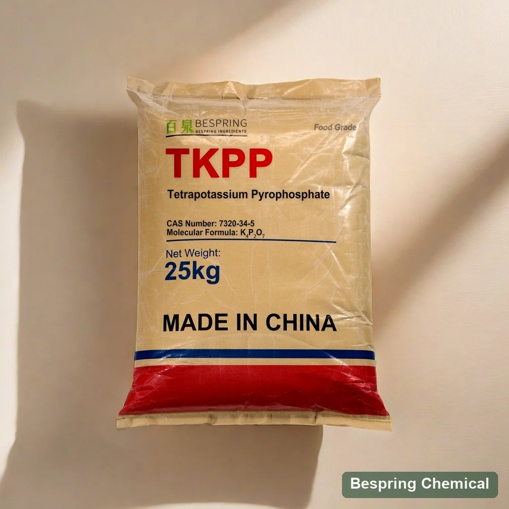
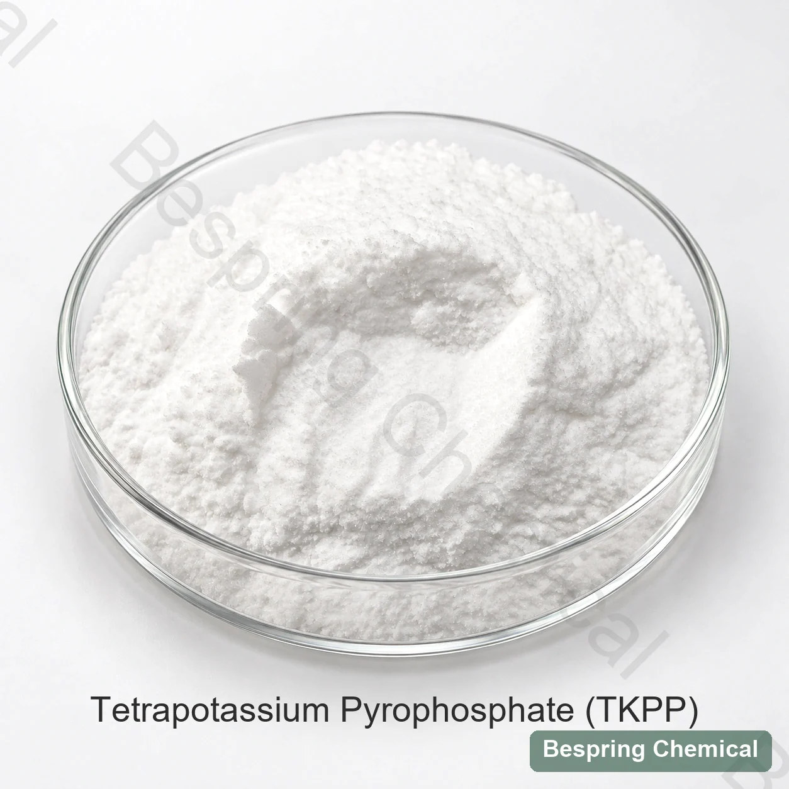

ส่วนประกอบโซเดียม
สูตร K₄P₂O₇ ไม่มีโซเดียม ต้องยืนยันสิ่งเจือปนโซเดียมในเกรดที่เสนอแยก จึงอาจนำมาเปรียบเทียบกับ TSPP ในงานลดโซเดียมได้ แต่ไม่ได้ทำให้อาหารสุดท้ายเป็น “โซเดียมต่ำ” ต้องคำนวณทุกแหล่งโซเดียมและตรวจเกณฑ์คำกล่าวอ้างตามกฎหมาย
ฟอสเฟตเกรดอาหาร · TKPP ของแข็ง · INS450(v) / E450(v)
Bespring จัดหาเตตระโพแทสเซียมไพโรฟอสเฟตเกรดอาหาร (TKPP) เป็นโพแทสเซียมฟอสเฟตด่างชนิดแข็งที่ประเมินในระบบเนื้อ อาหารทะเล และชีสแปรรูป ระบุมาตรฐานอาหาร ฐานวิเคราะห์ ขีดจำกัดฟลูออไรด์ และรูปผงหรือเม็ดก่อนเลือกเกรดสำหรับกระบวนการ

Product image esche และ Package เมื่อมีการเรียงลําดับ
* ยืนยันคําเรียงปัจจุบัน รวมการนําไปใช้, ปลายทาง, ต้องการข้อจํากัดมาตรฐาน, ความไม่เสมอภาคที่สําคัญ และปริมาณ ดูตัวอย่างการเปรียบเทียบแบบฟลูออไรด์เชิงพาณิชย์ด้านล่างนี้
ข้อเสนออ้างอิงปริมาณ K₄P₂O₇ ≥ 95.0%
การบรรจุรายการอ้างอิง25 กิโลกรัม
การโหลดตัวบรรจุอ้างอิง: 20 MT / 20 'FCL
การรองรับเอกสารร้องขอหน่วยประมวลผลพิเศษ, TDS, SDS และ ใบรับรอง
ภาพรวมของโปรดักต์
Tetrapopassium Holfosphate (TKPP) หรือเรียกอีกชื่อว่า Tetrapopassium Diphosphate หรือ Proโพแทสเซียม ไฮโดรโฟสเฟียต เป็นเกลือโพแทสเซียมของกรดไฟโตสโฟริก (TTPPP) เป็นสูตรเคมีเคมีของเค4P2O7CAS number ของมันคือ 7320-34-5 และคุณสมบัติการเติมอาหารคือ INS 450 (v) / E450(v) หน้านี้บรรยายค่า TKP ที่เป็นของแข็งด้วยสูตร anhydrus แสดงให้เห็น ไม่ใช่สารละลายเหลวหรือไฮเดรตที่กําหนดไว้
TKPP เป็นไฮโดรสคอป และละลายในน้ํา ลายเซ็น TKPP การ ระบุ ตําแหน่ง ตัว อักษร และ การ ปรับ ตัว แบบ ตัว อักษร น้ํา หนัก สูตร ของ มัน คือ 330.34 กรัม/ mol ยืนยัน รูป แบบ และ รายงาน ของ ระดับ ที่ เสนอ ให้; การ ดูด ซึม ความ ชื้น ไม่ ใช่ หลัก ฐาน ของ ผลึก ที่ กําหนด ไว้.
โพแทสเซียม-ฟอสเฟตตัดสินใจ
การแบ่งประเภท TKPP เมื่อระบบไฟโพแทสเซียม (Polphosphate) ที่ใช้โพแทสเซียมนั้น เป็นไปตามความต้องการในสูตรเปรียบเทียบโซเดียมและโพแทสเซียม พฤติกรรมการแก้ปัญหา และวัดประสิทธิภาพอาหารที่เสร็จแล้วกับระบบฟอสเฟตในปัจจุบัน
สูตร K₄P₂O₇ ไม่มีโซเดียม ต้องยืนยันสิ่งเจือปนโซเดียมในเกรดที่เสนอแยก จึงอาจนำมาเปรียบเทียบกับ TSPP ในงานลดโซเดียมได้ แต่ไม่ได้ทำให้อาหารสุดท้ายเป็น “โซเดียมต่ำ” ต้องคำนวณทุกแหล่งโซเดียมและตรวจเกณฑ์คำกล่าวอ้างตามกฎหมาย
แอนดรูว์บริสุทธิ์ K4P2O7 ในทางทฤษฎีมีโพแทสเซียมประมาณ47.4% โดยมวล การคำนวณจากสูตรนี้ไม่ใช่ผลวิเคราะห์รุ่นผลิต ต้องขอข้อมูลองค์ประกอบของเกรดที่เสนอ และแยกการรายงานธาตุ K และ P ออกจาก K₂O หรือ P₂O₅
JECFA ระบุ pH 10.0–10.7 สำหรับสารละลายแบบ 1 in 100 เป็นข้อมูลมาตรฐานอ้างอิง ไม่ใช่ค่า pH ที่ Bespring รับประกันหรือค่า pH ของอาหารสุดท้าย ต้องวัดสูตรทั้งหมดและประเมินรส สี และเนื้อสัมผัสภายใต้กระบวนการที่ตั้งใจใช้
แม้ TKPP จะขาดน้ําไป แต่ความผันผวนที่ถูกต้องขึ้นอยู่กับความเข้มข้น, อุณหภูมิ, ความแข็งตัวของน้ํา, ความปั่นป่วน, สารเกลือ และสารประกอบ
ขอบเขตที่อ้างถึง: การแทนที่โซเดียมฟอสเฟตด้วยทีเคพีพี สามารถลดโซเดียมได้โดยส่วนประกอบนั้น แต่ข้อกล่าวอ้างเรื่องอาหารต้องคํานวณอาหารสําเร็จรูปและตลาดปลายทาง
บทบาท
เดอะ รายการ ฟอสเฟต โพแทสเซียม ไฮโรฟอสเฟต รายการลูกเล่นการไล่ระดับสี/ moltsifier-sultier-surizer และ position values สอดคล้องกับการพิมพ์แบบเดียวของ JECFA ฟังก์ชันเหล่านี้อธิบายส่วนประกอบ; ไม่ได้กําหนดประสิทธิภาพหรืออนุมัติสําหรับอาหารทุกชนิด
ไพโรฟอสเฟตมีปฏิสัมพันธ์กับไอออนหลายประจุ เช่น แคลเซียม TKPP ยังให้สารละลายน้ำเป็นด่าง การจับไอออนและการปรับ pH เป็นคนละผล ให้ประเมินสมดุลแร่ธาตุ พฤติกรรมโปรตีน ความใส และตะกอนแยกกันในระบบทั้งหมด
ใน ระบบ เนื้อ สัตว์ หรือ เนย แข็ง ที่ เหมาะ สม ระบบ ฟอสเฟต ของ ฟอสเฟต ชนิด ไว โอ เล ชัน สามารถ รอง รับ การ ทํา ให้ โปรตีน มี น้ํา หนัก และ การ ทํา ให้ น้ํา ใน น้ํา ไหล ออก.
อุตสาหกรรม อาหาร ใช้
ใช้ขอบเขตการใช้งานเหล่านี้กำหนดรายละเอียดการทดลอง แล้วตรวจประเภทอาหารและการใช้ที่อนุญาตในตลาดปลายทาง ข้อกำหนดอ้างอิงไม่ทำนายผลผลิตที่คงอยู่ เนื้อสัมผัส หรือความคงตัวระหว่างเก็บ
ลอง เปรียบ เทียบ ทีเค พี พี ใน ระบบ ฟอสเฟต เมื่อ โซเดียม มี ส่วน ร่วม, การ สกัด โปรตีน, ความ มั่นคง ของ น้ํา, การ หด ตัว หรือ การ หด ตัว เป็น การ ทบทวน.
การแยกแคลเซียมออกจากจอ การแยกสารคาซิลินและไขมันที่ย่อยสลายของน้ํา ควบคุมองค์ประกอบของเคมีธรรมชาติ แคลเซียม ความชื้น พีเอช ไฟไฟ
การ รับ น้ํา หนัก หลัง จาก น้ํา ที่ เท่า เทียม กัน, ละลาย, เนื้อ เยื่อ, และ ฟอสเฟต ที่ จําเป็น ต่อ การ ผลิต นั้น จะ ทํา ได้. คู่มือการทดลองอาหารแช่แข็ง TKPP สําหรับสปีชีส์และตัวแปรในกระบวนการ
ใช้ TKPP เป็นส่วนประกอบเดียวเท่านั้น เมื่อมันมีความอิ่มตัว และความสามารถของไฟ จะช่วยตอบสนองโซเดียมที่นิยามไว้ sodium, soluble หรือเป้าหมายการทํางาน
ข้อมูลเชิงเทคนิค
ขีดจำกัดอ้างอิงทางการค้าเหล่านี้แยกจากผล COA รุ่นผลิต และไม่ยืนยันผ่านข้อกำหนดสากลทุกฉบับ ต้องตกลงข้อกำหนดและวิธีทดสอบปัจจุบันก่อนสั่ง สำหรับฐานมวล 1 ppm = 1 mg/kg ค่า0.003% ฟลูออไรด์ทางการค้าเท่ากับ30 mg/kg ไม่ใช่3 mg/kg
บน จอ เล็ก ๆ ให้ เลื่อน ตาราง ไป ใน แนว แนวนอน เพื่อ อ่าน ข้อ ความ ที่ ทํา ให้ เป็น รูป ร่าง ขึ้น แต่ ละ แผ่น.
ปัดหรือใช้แป้นพิมพ์เพื่ออ่านทุกคอลัมน์
| รายการทดสอบ | หน่วย | จํากัด การ ค้า | การไล่สีความต้องการ |
|---|---|---|---|
| ปริมาณ K₄P₂O₇ | % | ≥ 95.0 | พื้นฐานการค้า/ method ไม่ยืนยัน; JECFA ⁇ 95% อยู่บนพื้นฐานที่จุดชนวน |
| สสารละลายน้ํา | % | ≤ 0.2 | จํากัดตัวเลขเท่ากับ JECFA; ยืนยันวิธีการและผลลัพธ์ที่มาก |
| Asssicic (A) | mg/kg | ≤ 3 | JECFA ⁇ 3; จัดพิมพ์ EU E450(v) Text ⁇ 1. ยืนยันแยกระหว่างการทดสอบ |
| เฮฟ วี เมทั ล (เช่น Pb) | mg/kg | ≤ 10 | Agregate “as pb" ทดสอบ; ไม่แทนที่ Pb, a, Cd หรือ Hg |
| ตะกั่ว (พ.ศ. | mg/kg | ≤ 2 | JECFA ⁇ 4; จัดพิมพ์ EU E450(v) Text ⁇ 1. ยืนยันแยกการทดสอบ Pb |
| Fluoride (F) Name | mg/kg | ≤ 30 | JECFA และตีพิมพ์ EU E450 (v) Text ⁇ 10; จํากัด การพาณิชย์ไม่สามารถรับประกันนี้ |
| “การสูญเสียน้ำหนักเมื่อเผาที่ 110°C” | % | ≤ 0.5 | อุณหภูมิและวิธีการต้องการความตกลง; เปรียญถึง JECFA LOI ยังไม่ได้จัดตั้ง |
| แคดเมียม (ซีดี) | mg/kg | ≤ 1 | จํากัดการจําหน่าย; ยืนยันวิธีการแยกองค์ประกอบและผลของกลุ่ม |
| ปรอท (hg) | mg/kg | ≤ 1 | จํากัดการจําหน่าย; ยืนยันวิธีการแยกองค์ประกอบและผลของกลุ่ม |
| รูปลักษณ์ | — | ผง ขาว หรือ ก้าน | ยืนยันรูปแบบผง/ granular และการกระจายอนุภาค |
การตัดสินใจกําหนด: ฟลูออไรด์สูงสุดทางการค้าคือ30 mg/kg เทียบกับ10 mg/kg ใน JECFA และข้อความ EU E450(v) ที่เผยแพร่ ขีดจำกัดนี้รับประกันข้อใดไม่ได้ แม้บางรุ่นผลิตอาจตรวจต่ำกว่า ค่าสูงสุดสารหนูและตะกั่ว EU ที่เผยแพร่คือชนิดละ1 mg/kg ต่ำกว่าค่าทางการค้า3และ2 mg/kg ขอข้อกำหนด วิธี และ COA รุ่นผลิตที่สอดคล้อง การตรงเฉพาะบางค่าไม่ยืนยันครบถ้วน
ความแตกต่างของการทดสอบ: ข้อมูลทางการค้าคือ “การสูญเสียน้ำหนักเมื่อเผาที่110°C” ≤0.5% JECFA กำหนดการสูญเสียน้ำหนักเมื่อเผา ≤2% โดยใช้105°C 4ชั่วโมง แล้ว550°C 30นาที ชื่อทางการค้าไม่ยืนยันว่าใช้วิธีนั้นและห้ามถือเป็นผลการสูญเสียน้ำหนักเมื่อทำให้แห้ง ปริมาณสาร การสูญเสียน้ำหนักเมื่อเผา และ P₂O₅ เป็นการวัดแยกกัน
JECFA รายชื่อ INS 450(v), CCAS 7320-34-5, สูตร K4P2O7มีมวลสูตร 330.34 g/mol ปริมาณสาร ≥95% บนฐานหลังเผา และ pH 10.0–10.7 สำหรับสารละลายแบบ 1 in 100
ทบทวน ลายมือ อักษร ตัว เดียว ของ เจ ซี ฟ่าเดอะ ข้อความกฎระเบียบ (EU) No 231/2012 ที่เผยแพร่ กําหนดค่า E450( v) P2O5 42.0–43.7% บนฐานปราศจากน้ำ เป็นข้อกำหนดมาตรฐาน ไม่ใช่ค่าทางการค้าของ Bespring ตรวจสอบข้อความรวมฉบับล่าสุดและข้อแก้ไขก่อนอนุมัติสำหรับตลาด
เปิดข้อกําหนด EU แบบรวมหลีกเลี่ยงความสับสนของฟอสเฟต
วัสดุ เหล่า นี้ ไม่ สามารถ ใช้ แทน ได้ โดย การ ใช้ ตัว ย่อ หรือ น้ํา หนัก เท่า กัน.
K4P2O7 · INS 450(v)
โพแทสเซียม hyperphosphate; พิจารณาเมื่อโพแทสเซียมเป็นพื้นฐาน, accessinene Followosphate
Na4P2O7 · INS 450(iii)
โซเดียมไฟฟอสเฟต เปรียบเทียบสารโซเดียม ผลกระทบที่มีผลจริง และมีประสิทธิภาพเทียบเท่ากัน
Retrieved Election School TSPPK5P3O10
อย่า ถือ ว่า ส่วน ผสม ที่ คล้าย กัน นี้ เป็น ส่วน ประกอบ อย่าง เดียว กัน.
Review Food เกรด KPPการรองรับการจัดอันดับ
เอกสารระบบใบรับรองและการจัดการระบบมีความสามารถในการจํากัดเวลา โปรดถามสําหรับปัจจุบัน, ปรับใช้และตรวจสอบชื่อผลิตภัณฑ์, เว็บไซต์, ขอบเขต, ผู้ออกจําหน่ายและวันที่ถูกต้องระหว่างการจัดจําหน่าย
ข้อกําหนดปัจจุบัน, แผ่นข้อมูลทางเทคนิค, แผ่นข้อมูลความปลอดภัย และเอกสารอ้างอิง หรือใบรับรองที่ระบุประเภทของการวิเคราะห์
แจ้งความต้องการ HCCP ใด ๆ, Kosher, Halal, Allergen หรือ source-document. ยืนยันการใช้งานและปัจจุบันสําหรับผลิตภัณฑ์และการผลิตที่แน่นอนหรือเว็บไซต์แพ็ค
การร้องขอใบรับรองและขอบเขต ISO ปัจจุบัน พร้อมกับข้อมูลติดตามหรือคําถามคุณภาพ บริษัท หรือบริการการขาย ไม่ได้ครอบคลุมผลิตภัณฑ์, การผลิต หรือผลิตภัณฑ์ต่าง ๆ โดยอัตโนมัติ
การจัดการการจัดเก็บ
รูปลักษณ์และการจัดการการอ้างอิง


อนุมัติโปรแกรม
การแทนที่ด้วยโพแทสเซียม-ฟอสเฟต ควรได้รับการอนุมัติจากผลิตภัณฑ์และผลของกระบวนการ
บันทึกฟอสเฟตปัจจุบัน โซเดียมและโพแทสเซียม เคมีน้ํา สูตร pH ประมวลผลการสูญเสียและเรียกร้องเป้าหมาย
เพิ่ม TKPP ทีละน้อย ภายใต้การรบกวนและอุณหภูมิที่บันทึกไว้, ความเข้มข้น, ลําดับส่วนประกอบ เวลาที่ลดลง, ความชัดเจนและตะกอน
มีสารดิบ เกลือ น้ํา ตัดขน อุณหภูมิ กระบวนการ และตัวอย่างที่คงที่ ต่อต้านการควบคุมที่เห็นชอบ
Asses เสร็จสิ้นการ pH, โซเดียม/โปแตสเซียมการคํานวณ, ผลผลิต, การล้าง, การสลายตัวหรือเนื้อผิว, รสชาติ, เสถียรภาพของโกดัง และตราตรากฎหมาย
คําถามของผู้ซื้อ
TKPP มีอุปสงค์มากกว่าโซเดียมที่ผลิตโดย TSP. เปรียบเทียบสูตรของโซเดียมและโพเดียมทั้งหมด, PH, รสชาด, และกระบวนการผลลัพธ์. การแทนที่ขนาดเท่า หรือการอ้างสิทธิ์ที่กินได้ต่ํา
ใช่ เตตระโพแทสเซียมไพโรฟอสเฟต เตตระโพแทสเซียมไดฟอสเฟต และโพแทสเซียมไพโรฟอสเฟตระบุ K₄P₂O₇, CAS7320-34-5, INS450(v) / E450(v) หน้านี้กล่าวถึงของแข็ง ส่วนสารละลายต้องกำหนดความเข้มข้นแยก
ไม่ใช่ สูตรเคมีไม่มีโซเดียม แต่เกรดที่เสนออาจมีสิ่งเจือปน และอาหารมีแหล่งโซเดียมอื่น ใช้ข้อมูลองค์ประกอบที่มีหลักฐานสำหรับอาหารสำเร็จทั้งสูตร และตรวจเกณฑ์คำกล่าวอ้างของตลาดปลายทาง
กําหนดรูปแบบผงแป้งหรือแกรมแนล, อุณหภูมิน้ําและความแข็ง, ความเข้มข้นของเป้าหมาย, การกวน, สารเกลือและสารประกอบ. วัดเวลาความชัดเจน, ความชัดเจน, ตะกอนและคําตอบ pH ในกระบวนการประมวลผลน้ําหรือ bine.
ไม่สามารถรับประกันความต่อเนื่องได้ ข้อจํากัดของฟลูออไรด์คือ 30 mg/kg เมื่อเทียบกับ 10 mg/kg ใน JECFA และข้อความ EU E450(v) ที่ตีพิมพ์และจํากัดของสารตะกั่วนั้นต่ํากว่าด้วย การทดลองที่ต่ํากว่าจุดสูงสุดเชิงพาณิชย์ ร้องขอวิธีการยืนยัน และชุด COA และตรวจสอบมาตรฐานในปัจจุบัน
นําเสนอระดับอาหารแข็ง ทีเคพีพีพีพี, การผลิตผง/ความชอบเชิงพาณิชย์, ประยุกต์และกระบวนการ, ตลาดปลายทาง, เรียกค่ามาตรฐาน, ass say ass ass sayid, sluperide, superied และอื่น ๆ ข้อจํากัดที่สําคัญ, ปริมาณ, ท่าเรือ, Incceptection และความต้องการการจัดส่ง list, SDS, COA และประกาศที่จําเป็นเพื่อการอนุมัติ
ไม่ใช่ ชื่อเคมีและ CAS ไม่ยืนยันคุณสมบัติสำหรับอาหาร การควบคุมสิ่งเจือปน การใช้ เอกสาร และกฎที่เกี่ยวข้องต่างกัน ระบุเกรดอาหารและมาตรฐานที่ต้องการ อย่าอนุมัติผลิตภัณฑ์เทคนิค ปุ๋ย หรือของเหลวจากเอกลักษณ์เพียงอย่างเดียว
ยังไม่ได้พิสูจน์ความเทียบเท่า ข้อมูลทางการค้าระบุ “การสูญเสียน้ำหนักเมื่อเผาที่110°C” ≤0.5% ขณะที่ JECFA ใช้105°C 4ชั่วโมง ตามด้วย550°C 30นาที โดยมีขีดจำกัด ≤2% ต้องตกลงวิธีวิเคราะห์และฐานรายงาน อย่าเปลี่ยนชื่อผลทางการค้าเป็นการสูญเสียน้ำหนักเมื่อทำให้แห้ง
จง ตัดสิน ใจ ต่อ ไป
เปรียบเทียบ Na+ Axineue โดยการสนับสนุนไอออน พฤติกรรมการแก้ปัญหาและประสิทธิภาพของโปรแกรม
ทบทวนค่าฟอสเฟตแบบโพแทสเซียมอื่น โดยไม่ต้องทําให้การย่อตัวของ TKPP และ KTP ซับซ้อน
ขอ พิจารณา การ ผสม แบบ ที่ กําหนด ไว้ ซึ่ง ความ ไว ต่อ ความ ไว ต่อ ความ ไว ต่อ ความ ไว ต่อ การ เป็น ตัว อ่อน และ การ ทํา งาน ต้อง สมดุล.
ใช้คําแนะนําในการใช้งานเพื่อออกแบบปิกอัพ ทําอาหาร-สูญเสีย การกําจัดและการทดสอบประสาทสัมผัส
เชื่อมต่อการแยกสารละลายกับแคลเซียม, แคซิลิน, ความร้อน, การตัดไม้ และตัวแปรความเย็น
เริ่มการสนทนาที่เผ็ดร้อน
จาก นั้น ทีม ของ เรา ก็ จะ เตรียม การ ตอบ รับ ทาง การ ค้า ที่ เกี่ยว ข้อง.
บอกเราถึงตลาดเกรดและปลายทางของคุณ เราจะได้ยืนยันได้ว่าเอกสารไหน ที่สั่งได้
การอ้างอิงภายนอกไม่ใช่ใบรับรองชุดหรือค่าผลิตภัณฑ์ของเบสปริง